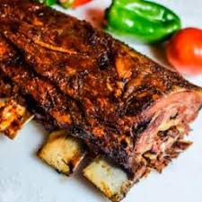

Bife à Parmegiana
Ingredientes:
- 4 bifes de carne (de sua preferência)
- 200g de queijo muçarela
- 300ml de molho de tomate
- Farinha de trigo, ovos e farinha de rosca (para empanar)
- Sal e pimenta a gosto
Modo de Preparo:
- Tempere os bifes com sal e pimenta.
- Empane os bifes na farinha de trigo, ovo e farinha de rosca.
- Frite os bifes até dourar.
- Coloque os bifes em uma assadeira, cubra com molho e queijo.
- Leve ao forno até o queijo derreter.
Costela no Bafo

Ingredientes:
- 2kg de costela bovina
- 3 dentes de alho
- 1 cebola
- Sal grosso e pimenta a gosto
- Papel alumínio
Modo de Preparo:
- Tempere a costela com alho, cebola, sal grosso e pimenta.
- Envolva a costela em papel alumínio.
- Leve ao forno a 180°C por 3 horas.
Frango ao Curry

Ingredientes:
- 500g de peito de frango em cubos
- 1 cebola picada
- 2 dentes de alho picados
- 200ml de leite de coco
- 2 colheres de sopa de curry
- Sal e pimenta a gosto
Modo de Preparo:
- Refogue a cebola e o alho até dourar.
- Adicione o frango e cozinhe até ficar dourado.
- Adicione o curry e o leite de coco.
- Cozinhe em fogo baixo até o frango estar bem cozido.